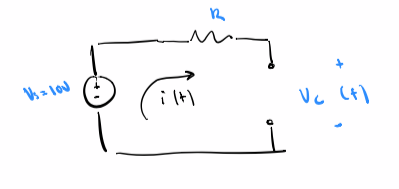
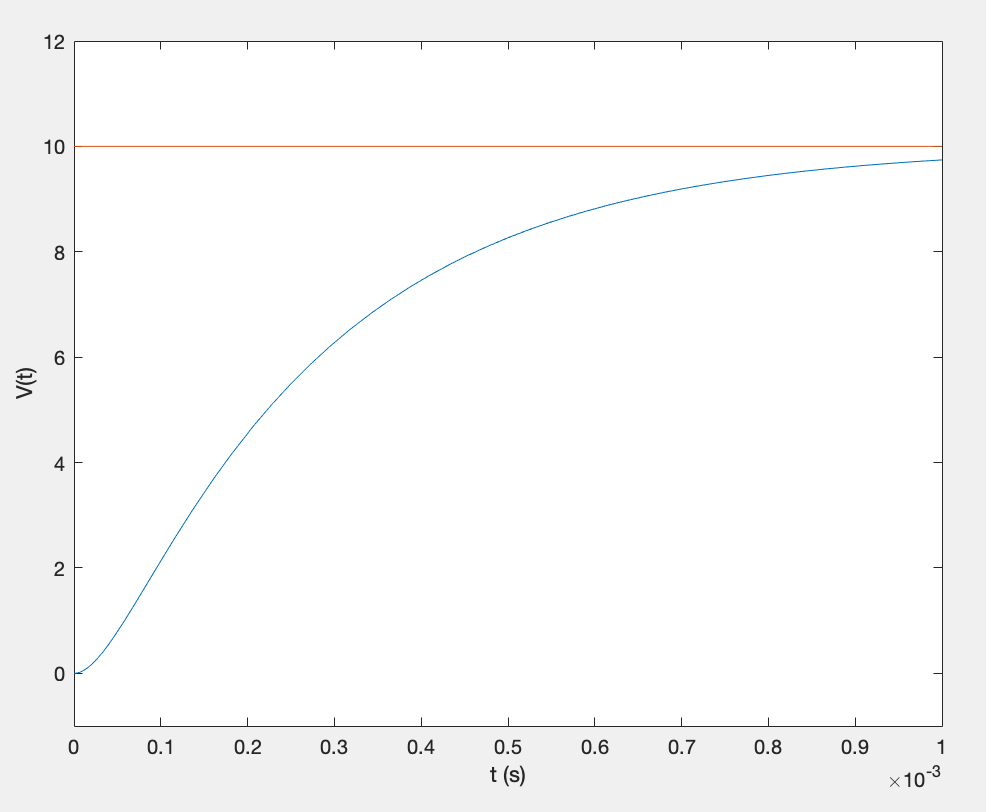
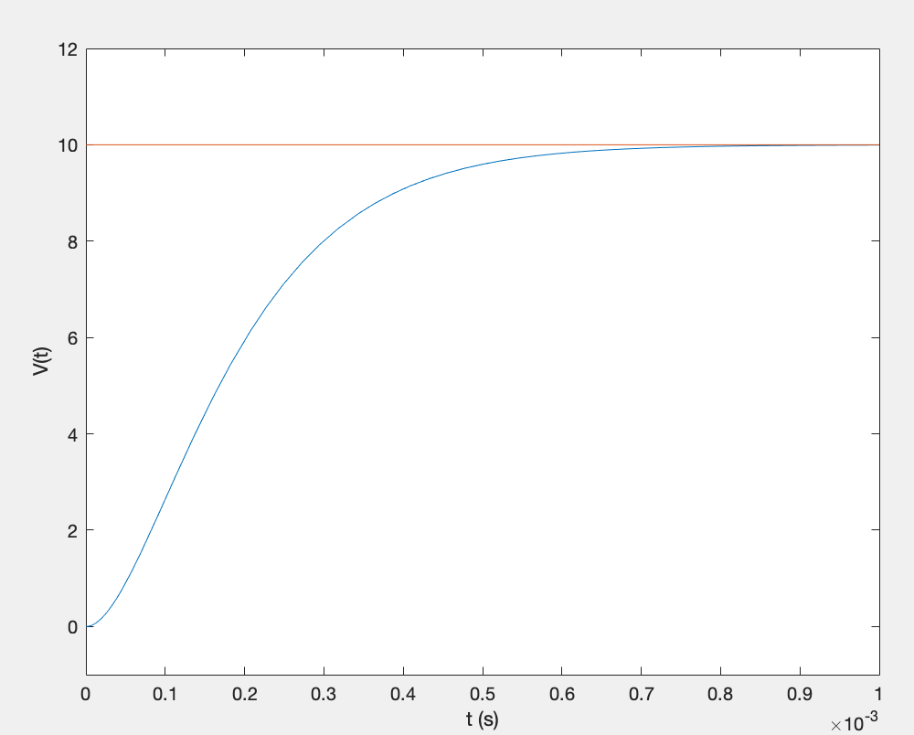
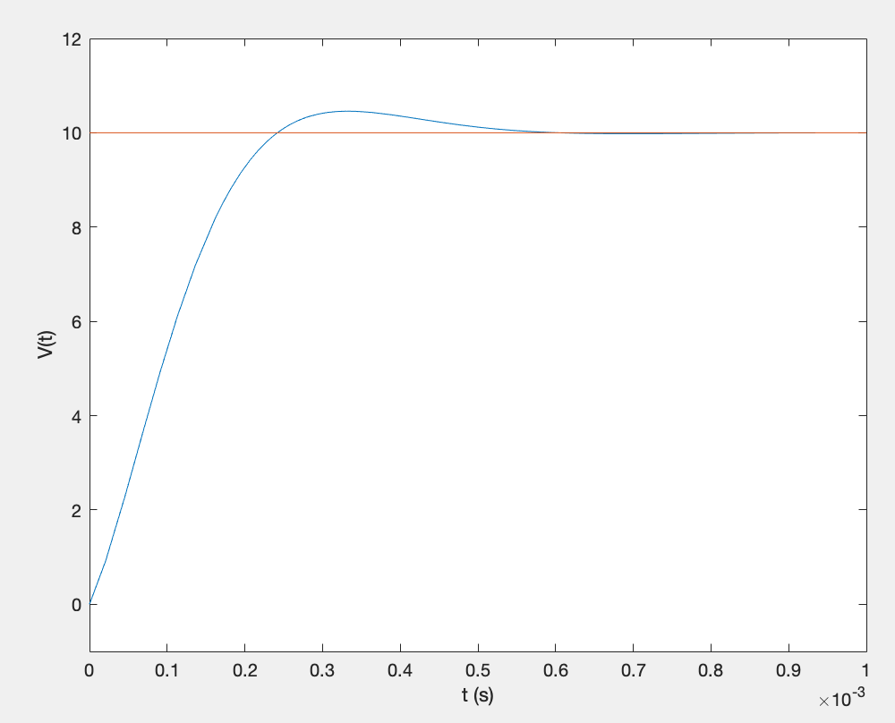

Math Modeling
Compilation of math models I've made in class and outside of class (WIP)
Technologies used: Differential Equations, Matlab
Models
#1 RL-Circuit Differential Equation Model

Question: Model the RL Circuit for I(t), given the above characteristics and initial current = 0
Apply KVL
`E(t) = I(t)R + L\frac{dI}{dt}`
Noticing Linear ODE
`I' + IR/L = \frac{E(t)}{L}`
Applying General Linear ODE Solution
`y(x) = e^-h\int e^h r dx + ce^-h `
`h=\int p(x) dx = \int R/L dt = R/Lt`
`e^h = e^(R/Lt)`
`I(t) = e^-(R/Lt)\int e^(R/Lt) \frac{E(t)}{L} dt + ce^-(R/Lt) `
`I(t) = E/R + \frac{C}{e^(R/Lt)} `
`I(t) = 48/11 + \frac{C}{e^(110t)} `

Using the Initial Condition to Obtain Particular Solution
`I(t) = 48/11(1+frac{1}{e^(110t)}) `
#2 RLC-Second Order Ciruit Model
Question: Determine `V_{c}(t) for R = 300, 200, 100 \Omega `
Apply KVL
`L\frac{di(t)}{dt} + Ri(t) + V_{c} = V_{s}`
We're looking for `V_{c}`, so substite with `i(t) = C \frac{dV_{c}}{dt}`
`LC\frac{d^2V_c}{dt} + RC\frac{dV_c}{dt} + V_{c} = V_{s}`
Simplify into General Linear 2nd Order ODE
`\frac{d^2V_c}{dt^2} + R/L\frac{dV_c}{dt} + 1/(LC)V_{c} = 1/(LC)V_{s}`
`\frac{d^2x(t)}{dt^2} + 2\alpha \frac{dx(t)}{dt} + \omega_0^2 x(t) = f(t)`
dampening coefficient `\alpha = R/(2L)`
undamped resonant frequency `omega_0 = 1/\sqrt(LC)`
Solve Particular Solution
Simplified circuit in steady state
`V_{c_p}(t) = V_s = 10V`
`\omega_0 = 1/\sqrt(LC) = 10^4` (same for all values of R)
Case 1 (300 `\Omega`):
`\omega_0 = 10^4`
`\alpha = R/(2L) = 1.5*10^4`
`\zeta = \alpha / \omega = 1.5` (overdamped case)
`s_1 = -\alpha + \sqrt(\alpha^2 - \omega_0^2) = -0.3820*10^4 `
`s_2 = -\alpha - \sqrt(\alpha^2 - \omega_0^2) = -2.618*10^4 `
Solving General Solution:
`V_c(t) = 10 + K_1e^(s_1t) + K_2e^(s_2t)` (combining homogenous and particular solutions)
`10 + K_1 + K_2 = 0` (evaluating at t=0)
`0 = s_1K_1 + s_2K_2` (taking derivative at 0)
`V_c(t) = 10 - 11.708e^(s_1t) + 1.708e^(s_2t)`
Overdamped voltage response
Case 2 (R = 200 `\Omega`):
`\omega_0 = 10^4`
`\alpha = R/(2L) = 10*10^4`
`\zeta = \alpha / \omega = 1` (critically damp)
`s_1 = -\alpha + \sqrt(\alpha^2 - \omega_0^2) = -10^4 `
Solving General Solution:
`V_c(t) = 10 + K_1e^(s_1t) + K_2te^(s_1t)` (combining homogenous and particular solutions)
`10 + K_1 = 0` (evaluating at t=0)
`s_1K_1 + K_2 = 0` (taking derivative at t=0)
`V_c(t) = 10 - 10e^(s_1t) + 10^5te^(s_1t)`
Critically damped voltage response
Case 3 (R = 100 `\Omega`):
`\omega_0 = 10^4`
`\alpha = R/(2L) = 5000`
`\zeta = \alpha / \omega = 0.5` (undedamped)
`\omega_n = \sqrt(\omega_0^2 - \alpha^2) = 8660`
Solving General Solution:
`V_c(t) = 10 + K_1e^(\alpha t)cos(\omega_nt) + K_2te^(\alpha t)sin(\omega_n t)` (combining homogenous and particular solutions)
`0 = 10 + K_1` (evaluating at t=0)
`-aK_1 + \omega_nK_2 = 0` (taking derivative at t=0)
`V_c(t) = 10 - 10e^(\alpha t)cos(\omega_nt) + -5.774te^(\alpha t)sin(\omega_n t)`
Underdamped voltage response
Work In Progress
victortaksheyev@gmail.com